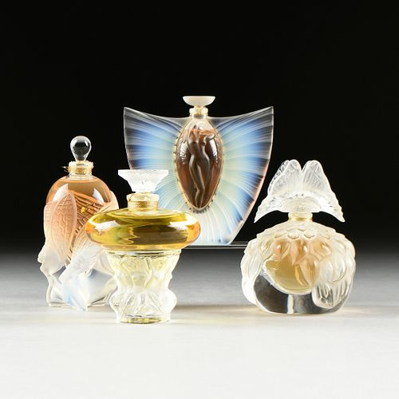

A Pioneer of Two Artistic Eras
Art Nouveau Glass
Lalique began experimenting with glass as a medium while he was still known primarily for his Art Nouveau jewelry. His experience as a jeweler strongly influenced his approach to glass, especially his use of natural forms and intricate details. He frequently incorporated designs featuring flowers, leaves, insects, birds, and other elements from nature. Lalique also experimented with techniques such as molding, engraving, and frosted glass to create texture and depth in his designs. His glasswork allowed him to create decorative objects that emphasized form and artistic expression rather than simply the value of expensive materials. Perfume bottles, vases, and other decorative pieces became important examples of his work as he moved further into glassmaking. These Art Nouveau glass designs helped establish Lalique as an artist who could successfully bring the delicate and organic qualities of jewelry into a new medium.


Art Deco Glass
During the 1920s, Lalique's glassmaking developed alongside the rise of the Art Deco movement. While his earlier Art Nouveau work emphasized flowing natural forms, his Art Deco designs often featured more geometric shapes and symmetrical patterns. Lalique continued to use glass as his primary medium, producing perfume bottles, vases, car mascots, and other decorative objects. His use of molded and frosted glass created distinctive textures that became an important part of his signature style. Lalique also produced hood ornaments for automobiles, combining functional objects with the decorative qualities of fine art. His Art Deco glasswork demonstrated how he adapted his artistic style to the changing tastes of the early 20th century. Today, these works remain some of his most recognizable contributions to the history of decorative glass and Art Deco design.
Most Famous Glass Works
- Vase "Bacchantes"
- Perfume Bottle "Amphitrite"
- Perfume Bottle "Deux Cigales"
- Vase "Serpent"
- Hood Ornament "Chrysis"
- Hood Ornament "Victoire"
- Vase "Coquilles"
- Perfume Bottle "Ceylan"
